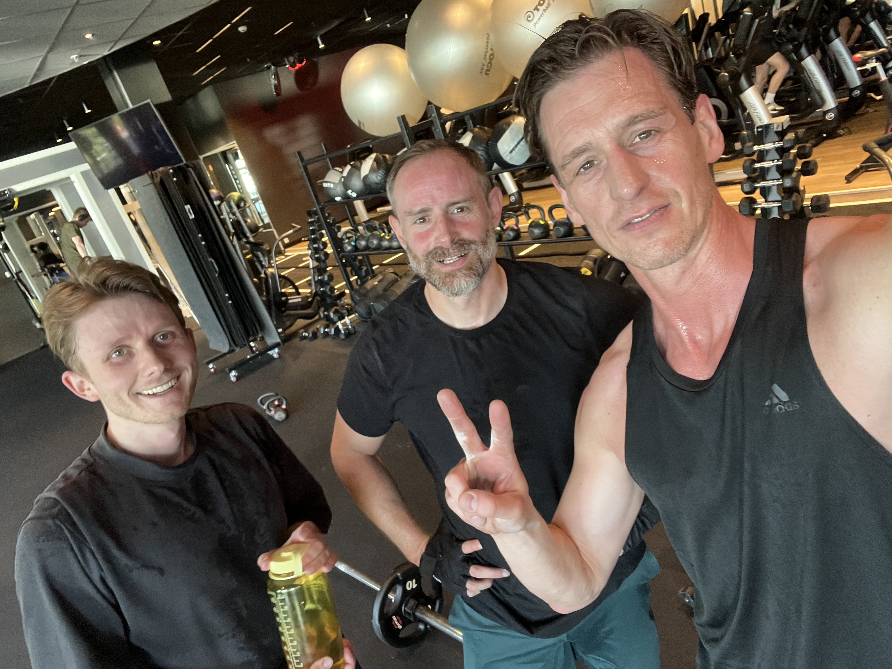
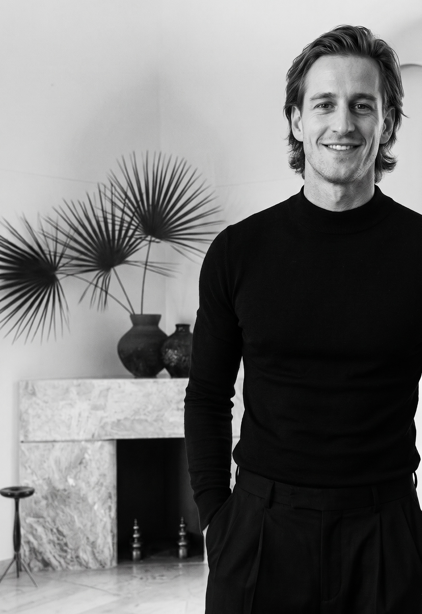
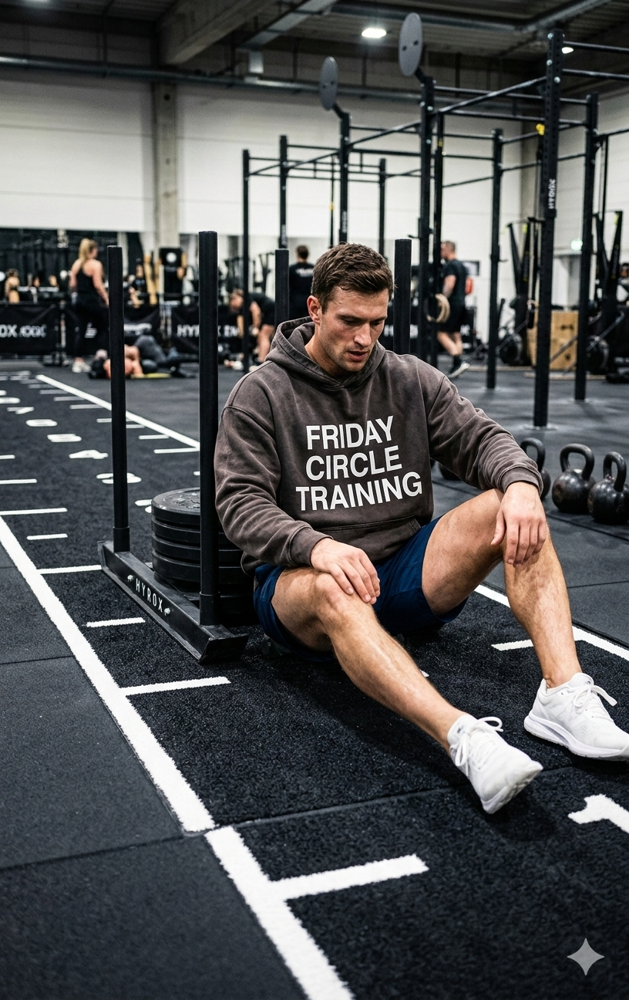
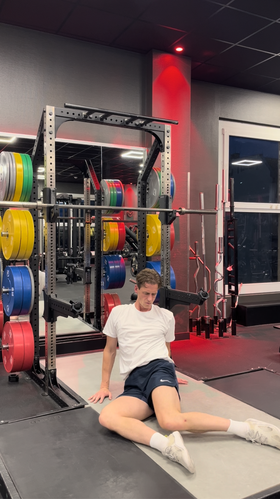

Keine Zeit für HYROX? Kein Personal Trainer zur Hand? Dir fehlt aber Bewegung? Hier schließen wir gemeinsam die
Lücke zwischen Social Media -Erwartung und Deiner Realität.
Keine Zeit für HYROX? Kein Personal Trainer zur Hand? Dir fehlt aber Bewegung? Hier schließen wir gemeinsam die
Lücke zwischen Social Media -Erwartung und Deiner Realität.
Du weißt was zu tun wäre.Und trotzdem schiebst du deinen 5km-Lauf vor dir her.
Bewegung heilt. Das hier ist Deinem Leben gewidmet. Fitness nach First Principle Thinking. Go! Fck Purpose, fck Big Brand Scam, fck 5am Club. Beweg Dich einfach jeden Tag. Das Programm unterstützt Dich, es in wenigen Wochen von selbst zu machen.
Ein leichter Schritt, Dich täglich ausreichend zu bewegen.



Apps sind Werkzeuge auf Deinem Smartphone. In Zukunft verschwinden sie weil sich Technik weiterentwickelt und Du Dein individuelles Interface nutzen wirst. Du wirst entscheiden können, mit welchen Datenbanken und Menschen Du Dich verbinden möchtest. Unser Ziel ist, frühzeitig eigene Wege zu finden, um in Zukunft freier als heute zu sein.
gogogo App
Ein mini Tool für Dich und Deine zwei Freunde. Ein Safe-Space mit Gamification, Aufgaben-Zuteilungen und vielen Tipps untereinander oder optional von Tipps. Keine Fitness-App sondern low-tech für den Alltagsgebrauch.
In Berlin bekommst Du für alle Themen einen Personal Trainer. Versiert und mit allen Grundlagen – damit Du nicht nur in Bewegung kommst sondern auch richtig trainierst.
Das Thema Bewegung ist viel einfacher als es uns die Fitnessbranche und insbesondere Influencer weiß machen wollen. Hier sind die wichtigsten Inhalte der meisten Kennenlerngespräche aus Trainerterminen. Was fehlt Dir noch im gesamten Bild?
Dein Körper steht auf drei Säulen: Kraft, Herz-Lunge und Skills — also Balance, Koordination, Beweglichkeit. Wenn eine schwächelt, hinkt das System. Die gute Nachricht: Du musst nicht alles auf einmal können. Du musst nur wissen, wo Du stehst.
Wissenschaftlicher Hintergrund
Die WHO empfiehlt seit 2020 für gesunde Erwachsene 150–300 Minuten moderate Bewegung pro Woche plus zwei Krafteinheiten plus Balance-Training. Das ist keine sportliche Höchstleistung — das ist die biologische Erhaltungsdosis.
Wer alle drei Säulen bedient, senkt sein Risiko für Herz-Kreislauf-Erkrankungen, Demenz, Diabetes und Stürze signifikant. Wer nur eine bedient (typisch: nur Cardio oder nur Krafttraining), trainiert an seinem Körper vorbei.
1× lang und locker. 1× intensiv und kurz. 2× Kraft. Der Rest: leichte Bewegung und echte Pause. Genauso hat Dein Körper vor 10.000 Jahren überlebt. Genauso bleibt er heute leistungsfähig.
Wissenschaftlicher Hintergrund
Das 80/20-Polarisationsmodell ist in der Trainingswissenschaft seit zwei Jahrzehnten Konsens: etwa 80 % der Bewegung in niedriger Intensität (Zone 2 — Dauerlauf, Wandern, lockeres Radfahren), 20 % in hoher Intensität (HIIT, Intervalle, Spiel).
Iñigo San Millán, Coach von Tadej Pogačar und Forscher an der University of Colorado, zeigt: genau diese Verteilung maximiert mitochondriale Dichte und Fettoxidation — und damit den Stoffwechselmotor, der über Lebenserwartung und Tagesenergie entscheidet. Krafttraining ergänzt, was Zone 2 nicht abdeckt: Knochendichte, Muskelmasse, hormonelle Balance.
Stöggl & Sperlich, Frontiers in Physiology 2014 — polarisiertes Training
Bewegung heilt Alles
Schon 10–20 Minuten am Tag verändern Deine Baseline. Spaziergang vor dem Bildschirm. Mobility statt Scrollen. Lesen statt Netflix. Du brauchst beides: körperliche Reize und mentale Pausen. Beide kosten Dich keine Stunde.
Wissenschaftlicher Hintergrund
Die größte Meta-Analyse zu Bewegung und Depression — Singh et al., BMJ 2024, über 14.000 Teilnehmer:innen — zeigt: strukturierte Bewegung ist bei leichten bis mittelschweren depressiven Symptomen so wirksam wie Antidepressiva oder Verhaltenstherapie. Spazierengehen, Joggen, Yoga und Krafttraining zeigten alle signifikante Effekte.
Mechanistisch hängt das an BDNF (Brain-Derived Neurotrophic Factor), Endorphinen, Dopaminregulation und der Verbesserung des Schlafs. „Mentale Bewegung“ — bewusste Atempausen, Lesen, Gespräche ohne Bildschirm — ergänzt das, weil das Nervensystem den Wechsel zwischen Anspannung und echter Ruhe braucht. Multitasking liefert weder das eine noch das andere.
Kniebeuge, Klimmzug, Kreuzheben, Drücken (Bank oder Liegestütz), Ziehen (Rudern), Schulterdrücken. Das ist alles. Variation entsteht durch Gewicht, Tempo und Wiederholungen — nicht durch komplizierte Geräte.
Wissenschaftlicher Hintergrund
Die sechs Grundübungen sind mehrgelenkige Verbundübungen (Compound Lifts) — sie aktivieren mehrere Muskelgruppen gleichzeitig und produzieren den größten Trainingsreiz pro Minute.
Sinnvolle Periodisierung läuft über drei bis vier Phasen: (1) Kraftausdauer — viele Wiederholungen, kurze Pausen, Technik festigen; (2) Hypertrophie — 8–12 Wdh., 60–90 Sek Pause, Muskelmasse wächst; (3) Maximalkraft — 3–5 Wdh., 3–5 Minuten Pause. Das ist der häufigste Fehler: Pausen werden zu kurz, dann ist es keine Maximalkraft mehr; (4) Kombinationsphasen.
Die Trainingswissenschaft (Schoenfeld 2024) zeigt: nicht das Timing macht den Unterschied, sondern Gesamtreiz × Erholung × Konsistenz.
Schoenfeld et al., Sports Medicine 2024 — Training Volume Meta-Analyse
ACSM Position Stand on Resistance Training
Die Nr. 1 Übung
Wer mit 90 noch ohne Hilfe vom Boden aufsteht, lebt nachweislich länger. Starke Glutes halten Dein Becken in Position, Deine Wirbelsäule aufrecht, Deinen Rücken schmerzfrei. Wir starten Dich mit Spanish Squats — und Du wirst spüren, wo Du stehst.
Wissenschaftlicher Hintergrund
Der Sitting-Rising-Test (Araújo et al., Update 2025) prüft die Fähigkeit, ohne Hilfe von Händen oder Knien vom Boden aufzustehen. In einer Kohorte über 4.000 Personen, beobachtet über 12 Jahre, hatten Menschen mit einem Score von 0–4 (von 10) ein 6-fach erhöhtes kardiovaskuläres Mortalitätsrisiko gegenüber denen mit Score 10.
Der Test misst gleichzeitig Kraft, Beweglichkeit, Balance und Körperzusammensetzung — die vier Dinge, die im Alltag verloren gehen, wenn man sich nicht mehr in die volle Hocke bewegt.
Trainingsseitig adressiert die Kniebeuge die gluteale Kette: starke Glutes ziehen das Becken in eine neutrale Position, der untere Rücken muss nicht mehr kompensieren, die Schultern hängen entspannt — Haltungsschmerzen verschwinden bei vielen Klient:innen allein dadurch. Der Spanish Squat (Widerstandsband um einen Pfeiler) ist der ideale Einstieg, weil er Knie-Ausrichtung und Gluteus-Aktivierung gleichzeitig schult.
Klimmzug ist die zweitwichtigste Übung. Schon passives Hängen an der Stange dekomprimiert Wirbelsäule und Schultern. Griffkraft ist einer der stärksten messbaren Lebenserwartungs-Marker, die wir kennen.
Wissenschaftlicher Hintergrund
Eine Meta-Analyse von 42 Studien mit über 3 Millionen Teilnehmer:innen (Scientific Reports, 2024) zeigt: pro 5 kg geringere Griffkraft steigt das Risiko, vorzeitig zu sterben, um 16 %.
Die Korrelation ist nicht kausal — Griffkraft baut keine Lebenserwartung auf — aber sie ist ein hervorragender Proxy für Gesamtmuskelmasse, neuromuskuläre Integrität und biologisches Alter. Trainingstechnisch ist der Klimmzug der mechanisch sauberste Weg, die hintere Kette (Latissimus, Trapezius, Rhomboiden, Bizeps) gleichzeitig zu adressieren und Schulterstabilität in Dekompression zu trainieren.
Wer keinen Klimmzug schafft: passives Hängen 30–60 Sekunden ist bereits ein Trainingsreiz.
Es gibt nicht die richtige Ernährung. Es gibt Prinzipien, die für die meisten Menschen funktionieren — und Deinen Alltag, der entscheidet, wie sie zu Dir passen. Mein Vorschlag: proteinreiches Frühstück, eine warme Hauptmahlzeit, 4–5 Stunden Mahlzeitenabstand, gerne Quark mit Protein am Abend.
Wissenschaftlicher Hintergrund
1. Gesamtprotein schlägt Protein-Timing. Die populäre Idee vom „anabolen Fenster“ hält neuen Meta-Analysen nicht stand. Was zählt, ist die tägliche Proteinzufuhr (ca. 1,6 g/kg Körpergewicht für Trainierende), verteilt auf 3–4 Mahlzeiten. Wann genau Du Protein isst, spielt kaum eine Rolle.
2. Time-Restricted Eating wirkt — moderat. Mehrere 2024er-Meta-Analysen zeigen: ein 8–10-Stunden-Essensfenster führt zu kleinem, aber konsistentem Gewichtsverlust, besserer Insulinsensitivität und niedrigerem HbA1c. Mechanismus: teils Kaloriendefizit, teils zirkadiane Ausrichtung.
3. Zirkadianer Rhythmus ist real, aber nicht heilig. Schichtarbeiter:innen, Eltern, Reisende können nicht im Lehrbuch-Rhythmus essen. Die Studien zeigen: frühes Essensfenster (z.B. 8–18 Uhr) wirkt etwas besser als spätes — wenn es Dir passt. Wenn nicht: das, was Du konsistent durchhältst, schlägt das, was optimal aber unrealistisch ist.
Vier Krafttage pro Woche und nichts passiert mehr? Dann fehlt der andere Reiz. Dein Nervensystem will Variation. Dein Stoffwechsel ist ein Regelkreis, kein Excel-Sheet — er passt seinen Output an Deinen Input an. Das ist nicht persönliches Versagen. Das ist Biologie.
Wissenschaftlicher Hintergrund
A) Adaptation des Nervensystems. Wer monatelang den gleichen Reiz fährt, wird bewegungseffizienter — der Körper braucht weniger Energie für dieselbe Arbeit. Was sich anfühlt wie Stagnation, ist Effizienzgewinn. Die Lösung ist Reizvariation: HIIT einbauen, wenn nur Kraft gemacht wurde; Tempo wechseln; neue Bewegungsmuster. Eine 2024er-Meta-Analyse zur Concurrent-Training-Interferenz zeigt, dass HIIT und Krafttraining sich gegenseitig nicht behindern, wenn sinnvoll gesetzt — sondern den Trainingseffekt sogar verstärken können.
B) Das Constrained Energy Expenditure Model. Herman Pontzer (Duke University) zeigte mit doppelt-markiertem Wasser bei den Hadza-Jägern und -Sammlern in Tansania: ein Mensch, der acht Stunden täglich auf Jagd geht, verbrennt kaum mehr Kalorien als jemand mit Bürojob. Der Körper regelt seinen Energieverbrauch von oben: was Du in Bewegung mehr verbrauchst, drosselt er in Reparatur-, Immun- und Reproduktionsprozessen herunter. Kalorienzählen ist ein guter Ansatz — aber kein vollständiges Modell.
Pontzer et al., Current Biology 2012 — Hadza Energy Expenditure
Pontzer, „Burn“ (Penguin 2021)
Es liegt nicht am Alter
Die größte Lüge über das Älterwerden: „Mein Stoffwechsel wird langsamer.“ Wissenschaftlich falsch. Was wirklich passiert: Menschen bewegen sich weniger. Dein Stoffwechsel reagiert auf Deine Aktivität — nicht auf Dein Geburtsjahr.
Wissenschaftlicher Hintergrund
Die definitive Antwort gab die Pontzer-Studie 2021 in Science: 6.421 Teilnehmer:innen aus 29 Ländern, alle Altersgruppen, gemessen mit der Goldstandard-Methode (doppelt-markiertes Wasser). Ergebnis: Der Grundumsatz bleibt zwischen dem 20. und 60. Lebensjahr stabil. Erst ab ca. 60 sinkt er um etwa 0,7 % pro Jahr — deutlich weniger als die meisten Diätbücher behaupten.
Was sich verändert: die Bewegungsmenge (Menschen bewegen sich im Alter weniger) und die Muskelmasse (Sarkopenie ab dem 30. Lebensjahr, etwa 1 % pro Jahr Verlust, wenn nicht gegengesteuert wird). Beides ist trainierbar.
VO2max — das Maß für aerobe Fitness — ist einer der stärksten Mortalitätsprädiktoren überhaupt: jede MET (3,5 ml O2/kg/min) mehr senkt das Sterberisiko um etwa 11 %.
Wenn Du nicht abnimmst, obwohl Du „alles richtig“ machst — schau zuerst auf Deinen Schlaf. Chronischer Stress plus zu wenig Schlaf gleich Speichermodus. Cortisol und Insulin unterdrücken Fettabbau. Das ist nicht Disziplinmangel. Das ist Hormonbiologie.
Wissenschaftlicher Hintergrund
Eine kontrollierte Studie (Mayo Clinic, 2022) zeigte: 14 Tage Schlafrestriktion auf 4 Stunden pro Nacht führten zu +9 % Bauchfett und +11 % viszeralem Fett — bei sonst identischer Kalorienaufnahme.
Mechanismus: Schlafmangel hyperaktiviert die HPA-Achse (Hypothalamus-Hypophyse-Nebenniere). Cortisol bleibt abends erhöht, der zirkadiane Cortisol-Rhythmus flacht ab. Erhöhtes Cortisol treibt Heißhunger auf hochkalorische Lebensmittel, begünstigt die Einlagerung von Fett im Bauchraum (viszeral — gefährlicher als subkutan) und unterdrückt Fettabbau.
Evolutionär ergibt das Sinn: anhaltender Stress wurde vom Körper als „Mangellage“ interpretiert — eine Belagerung, eine Hungersnot. Der Körper antwortet mit Speichermodus. Heute reagiert er auf chronischen Job-Stress oder Schlafmangel mit demselben Mechanismus.
Praktische Konsequenz beim Abnehmen — drei Hebel, nicht einer: moderates Kaloriendefizit (nicht extrem), Muskelaufbau (höherer Grundumsatz, hormonell günstiger), Erholung (7–8 h Schlaf, Stressmanagement, Pausen).
Wir sind biologisch unterschiedlich. Das heißt aber nicht, dass wir anders trainieren müssen. Die sechs Grundübungen funktionieren bei jedem Menschen. Wer Angst hat, durch Krafttraining „bulky“ zu werden — die ist unbegründet. Und wer den Zyklus berücksichtigen will, kann seine Trainingsspitzen klug darauf legen.
Wissenschaftlicher Hintergrund
1. Frauen werden vom Krafttraining nicht „bulky“ — auch nicht aus Versehen. Männer produzieren etwa 15- bis 20-mal mehr Testosteron als Frauen. Testosteron ist der primäre Treiber muskulärer Hypertrophie auf hohem Niveau. Was Frauen auf Bildern weiblicher Bodybuilderinnen sehen, entsteht durch jahrelanges, hochspezialisiertes Training, einen anhaltenden Kalorienüberschuss von mehreren hundert Kilokalorien täglich und in vielen Fällen pharmakologische Unterstützung. Mit zwei bis drei Krafteinheiten pro Woche, ausgewogener Ernährung und ohne expliziten Aufbau-Plan ist „bulky“ physiologisch praktisch ausgeschlossen.
Was tatsächlich passiert: mehr Muskel-Tonus, klarere Definition, bessere Haltung, stabilere Gelenke. Knochendichte und Stoffwechsel profitieren spürbar — was speziell ab der Perimenopause ein zentraler Hebel gegen Sarkopenie und Osteoporose ist.
2. Die Hypertrophie-Antwort ist gleich — nur das absolute Ausmaß unterscheidet sich. Die größte aktuelle Bayesian-Meta-Analyse (Refalo et al., PeerJ 2025) zeigt: die relativen Hypertrophiezuwächse sind bei Frauen und Männern praktisch identisch. Typ-II-Muskelfasern wachsen bei beiden Geschlechtern gleich. Absolut wachsen Männer im Oberkörper etwas mehr — was an der höheren Ausgangsmasse liegt, nicht an der Trainingsantwort. Heißt: Frauen können denselben Trainingsplan fahren und dieselben relativen Fortschritte erwarten.
3. Der Zyklus beeinflusst die Tagesform — und das darf man nutzen. Östrogen wirkt anabolisch und neuromuskulär anregend. In der späten Follikelphase und um den Eisprung zeigen mehrere Studien Spitzenwerte für Maximalkraft, Sprungkraft und Squat-Leistung. In der späten Lutealphase — wenn Progesteron hoch ist — sinkt die Leistung bei vielen Frauen messbar; viele berichten auch subjektiv von höherer Müdigkeit, Wassereinlagerung und höherer Herzfrequenz bei gleicher Belastung.
Daraus folgt keine Pflicht zur Zyklus-Optimierung — individuelle Schwankungen sind groß. Aber wer plant: Maximalkraft-Blöcke in die Follikelphase legen, lockere Einheiten und Mobility in die späte Lutealphase. Wer nicht plant, verliert keinen relevanten Trainingseffekt.
Praktisch relevant — unabhängig vom Geschlecht: Beckenboden-Aktivierung als Standard in jeder Squat- und Hinge-Übung; nach Schwangerschaft Wiedereinstieg über Rumpf-Stabilität und Atemmechanik; Eisenstatus (Ferritin) bei menstruierenden Frauen regelmäßig checken — Eisenmangel drückt die Trainingsantwort spürbar.
Eine Fitness-App zählt Sätze. Sie merkt nicht, wenn Du gestresst, müde oder krank bist. Sie korrigiert keine Spanish Squats. Sie sieht nicht, wie Dein Leben gerade läuft. Genau das tue ich. Persönlich. Oder über die gogogo App — wenn Du Begleitung statt Coach-Speak suchst.
Die Studienlage zur Accountability in Verhaltensänderung ist klar: Menschen, die mit einer realen Person (nicht nur einer App) verbunden sind, halten Trainingsroutinen 2–3× länger durch. Der Mechanismus ist nicht Motivation — es ist Identitätsbindung: „Ich bin jemand, der mit Joscha trainiert“ wirkt anders als „Ich nutze eine App“.
Die Friday-Circle-Logik: Du bist kein Klient in einem Programm — Du bist Teil einer kleinen Gruppe, in der wir uns gegenseitig sehen. HYROX hat mit 250 Millionen Gym-Sportler:innen weltweit gezeigt, wie ein gemeinsames Purpose funktioniert. Wir bieten dasselbe für Menschen, deren Zeit nicht für HYROX-Vorbereitung reicht.
wöchentlich
CYCLETRAINING
Das kostet Dich auch nichts und bringt Dir Routine und Anschluss:
Ein hochintensives Gruppentraining als Wochenhighlight.
Wir unterstützen an anderen Tagen mit Kraft-, Ausdauer-, Skilltraining.
Ich bin Architekt, habe zwanzig Jahre Räume für andere entworfen – und dabei lange vergessen, meinen eigenen Alltag in Ordnung zu bringen. Als ich anfing als Fitnesstrainer zu arbeiten, habe ich jeden Tag mehr verstanden, wie viel Potenzial an Zufriedenheit wir liegenlassen weil wir uns nicht um uns selbst kümmern. Ich habe mit Freunden, Trainingspartnern und Mitgliedern im Gym erlebt, dass ein ehrliches Gespräch und eine einfache Wochenroutine mehr bewirken als jede App und jedes teure Coaching. gogogo ist der Versuch, genau das zugänglich zu machen – für Menschen die wissen was sie tun müssten, und einfach jemanden brauchen der mit ihnen zusammen dranbleibt.
An einem Feierabend für interne Verwendung aufgenommen und auf englisch mit einem cringe Sound vertont. Bis es professionelles Material gibt - hier eine kleine Kostprobe des eigenen Oberkörpertrainings im Juli 2025 mit leichten Gewichten.
Basics für fortgeschrittenes Krafttraining, das ich grundsätzlich empfehle: Klimmzüge, Pendlay Row, Bench Press, Military Press, Reverse Fly, Core-Rotation mit der Langhantel.
Wenn Du noch kein Krafttraining in Deinen Alltag integriert hast oder lange Pause gemacht hast: es gibt für jede dieser Übungen auch equivalente Vereinfacherung. Oder wenn Du einfach nur mit Körpergewicht trainieren willst, können wir Dir auch Übungen dafür zeigen. Krafttraining ist keine Raketentechnik, super easy und ab 2 Stunden in der Woche erledigt. Starte einfach mit Liegestützen auf den Knien, freie Kniebeugen und Klimmzügen mit Füßen auf den Boden. Einen mini Plan zur Steigerung und tägliche Erinnerung für mehr Bewegung bekommst Du von uns wenn Du möchtest.

Mobilitätsroutine
Teil 1 des Bewegtbildmaterials vom Juli 2025 für interne Zwecke. Weil es eines meiner Steckenpferde ist, stell ich es online, bis es professionelles Material gibt.
Mobilität bedeutet nicht einfach Beweglichkeit sondern den eigenen Körper plus mehr Gewicht über den weitest möglichen Bewegungsradius bewegen zu können. Das kannst Du mit einer dreiminütigen Routine vorm Training aber auch an anderen Tagen verbessern. Was aber auch zur Wahrheit gehört: Beweglichkeit Deines Körpers steigerst Du mit einem abwechslungsreichen Alltag und Training.
Urban Sports. Apps. Der PT den du dreimal besucht hast.
Du kennst das bereits
Urban Sports. Apps. Der PT den du dreimal besucht hast.
Urban Sports gibt dir Zugang. Apps geben dir Pläne. YouTube gibt dir Inspiration. Instagram gibt dir Schuldgefühle. Kein einziges dieser Tools kennt deine Woche – oder bleibt dran wenn sie schiefläuft. Das ist keine Kritik. Das sind Werkzeuge. gogogo ist der Mensch der sie mit dir sinnvoll einsetzt.
Dein Gehirn ist nicht für Vorsätze gebaut – es ist für unmittelbare Belohnungen optimiert. Jede App, jede Benachrichtigung konkurriert mit dem Impuls aufzustehen und zu trainieren. Die meisten Trainingspläne sind für ein ideales Leben gebaut – nicht für deins. Eine Woche mit Overtime, schlechtem Schlaf, vollen Terminen existiert in keinem Programm. In der Realität ist sie der Normalzustand. gogogo baut den Plan um dein Leben. Nicht umgekehrt.
Jedes Erstgespräch endet mit einem konkreten Wochenplan. Kraft, Ausdauer, Balance & Mobilität – vier Bereiche, ein System. Kein Lifestyle, keine Ideologie. Bewegung ist die wirksamste Medizin die du dir verschreiben kannst – als dokumentierte Physiologie, nicht als Versprechen.
Motivation ist ein Wetterbericht. Gewohnheit ist Klima. gogogo kalibriert deinen Plan an echte Wochen – nicht an Urlaubshemd-Phantasien – und bleibt im Gespräch wenn sich dein Job, deine Familie oder dein Schlaf verändert. So wird aus vier Stunden pro Woche ein Rhythmus, den du nicht mehr diskutierst.
Joscha mag Menschen. Und besonders wenn er ihnen einen kleinen lieben Schubs geben darf.
Freitagsgruppe Berlin
Wir trainieren freitags zusammen im Prenzlauer Berg.
Keine Mitgliedschaft – einfach als Freunde. Dieser Moment kurz vorm Wochenende ist toll. Gemeinschaft. Man fiebert die restliche Woche drauf hin.
Tandem
Seit einem Jahr trainieren wir zusammen.
Als Tandem. Johann hilft bei Marketing und Productdevelopment und ich motiviere ihn wöchentlich zum Training. Komplett simpel aber effektiv.
WhatsApp Accountability
Täglich. Ehrlich. Wirksam.
Mit Fatih und meinem Bruder habe ich zwei Jahre lang täglich über Wohlbefinden und Bewegung kommuniziert. Das hilft mehr als eine App – denn wenn man weiß, dass die anderen auf einen zählen, kann man auch auf sie zählen.
Echtes Interesse
Wohlwollendes Interesse verändert alles.
Mimi ist eine von vielen aus dem Fitness Studio. Was zählt: echtes, wohlwollendes Interesse. Motivation kommt durch Wahrnehmung der Kapazitäten, der Fortschritte und über gezielte Arbeit.
Woher die Idee kommt
So viel Potenzial lassen wir einfach liegen.
Alle Trainertermine im Fitnessstudio zeigen mir wie wichtig die ganzheitliche Unterhaltung mit dem einzelnen Menschen ist. Da, wo ich als Architekt aufgehört und als Trainer angefangen habe, entstand die Idee. So viel Potenzial für ein zufriedenes Leben lassen wir liegen – wenn wir nicht einfach in Bewegung kommen.